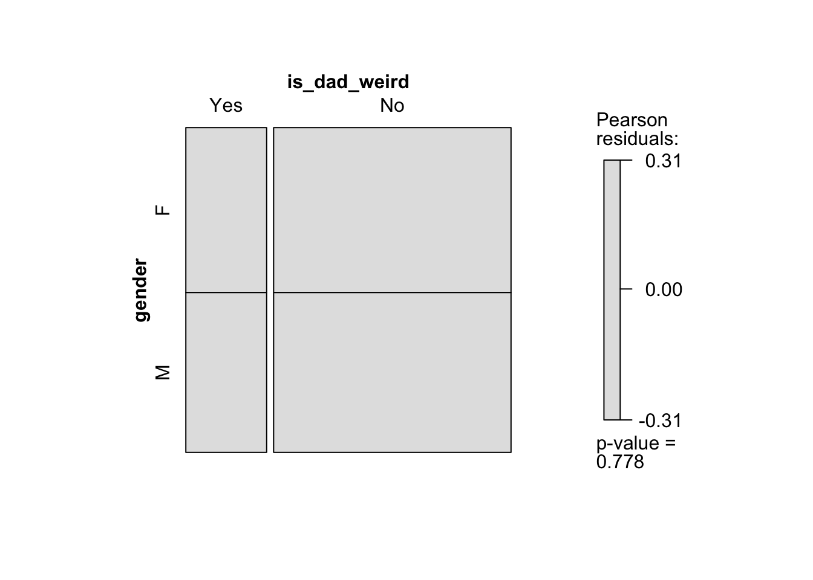
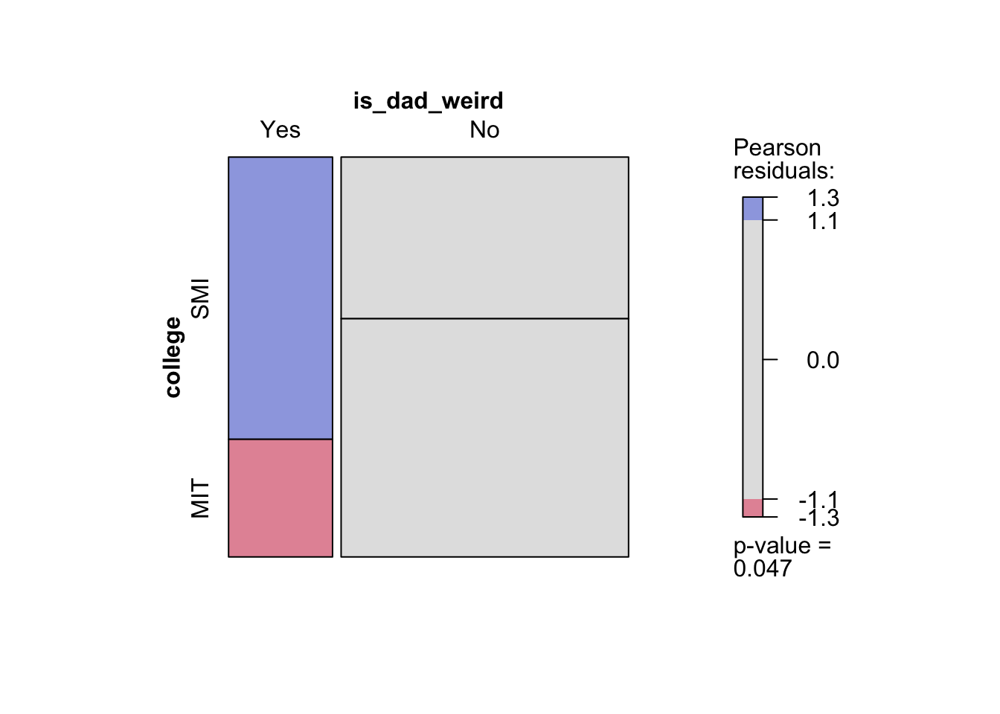
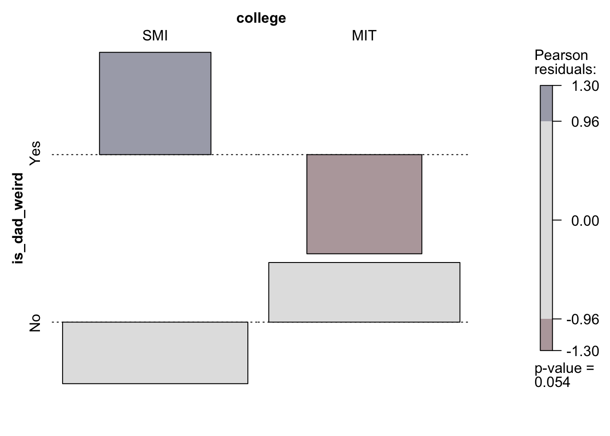

This data set explores a playful social observation among students from MIT and Srishti: examining whether they perceive their fathers as “weird.” Does being from a tech institute or a design institute influence one’s perceptions of their parents?
Data Dictionary
Qualitative Variables
Name: Factor indicating name of the participant.
gender: Factor indicating sex. Gender refers to Male, Female or Non-Binary.
is_dad_weird: Factor indicating whether the participant thinks their dad is weird or not.
college: Factor indicating the institute the participant is currently studying in.
Our assumptions before performing EDA:
MIT folks might be less likely to think their dads are weird compared to Srishti folks.
Females might be more likelier to think their dads are weird compared to males.
Setting up the libraries
library(tidyverse)
── Attaching core tidyverse packages ──────────────────────── tidyverse 2.0.0 ──
✔ dplyr 1.1.4 ✔ readr 2.1.5
✔ forcats 1.0.0 ✔ stringr 1.5.2
✔ ggplot2 4.0.0 ✔ tibble 3.3.0
✔ lubridate 1.9.4 ✔ tidyr 1.3.1
✔ purrr 1.1.0
── Conflicts ────────────────────────────────────────── tidyverse_conflicts() ──
✖ dplyr::filter() masks stats::filter()
✖ dplyr::lag() masks stats::lag()
ℹ Use the conflicted package (<http://conflicted.r-lib.org/>) to force all conflicts to become errors
library(mosaic) # Our go-to package
Registered S3 method overwritten by 'mosaic':
method from
fortify.SpatialPolygonsDataFrame ggplot2
The 'mosaic' package masks several functions from core packages in order to add
additional features. The original behavior of these functions should not be affected by this.
Attaching package: 'mosaic'
The following object is masked from 'package:Matrix':
mean
The following objects are masked from 'package:dplyr':
count, do, tally
The following object is masked from 'package:purrr':
cross
The following object is masked from 'package:ggplot2':
stat
The following objects are masked from 'package:stats':
binom.test, cor, cor.test, cov, fivenum, IQR, median, prop.test,
quantile, sd, t.test, var
The following objects are masked from 'package:base':
max, mean, min, prod, range, sample, sum
library(ggformula)library(infer) # An alternative package for inference using tidy data
Attaching package: 'infer'
The following objects are masked from 'package:mosaic':
prop_test, t_test
library(broom) # Clean test results in tibble formlibrary(skimr) # data inspection
Attaching package: 'skimr'
The following object is masked from 'package:mosaic':
n_missing
library(tinytable) # Pretty Tables
Attaching package: 'tinytable'
The following object is masked from 'package:ggplot2':
theme_void
library(kableExtra) # Pretty Tables
Attaching package: 'kableExtra'
The following object is masked from 'package:dplyr':
group_rows
library(ggprism) # Prism-like ggplot themeslibrary(resampledata3) # Datasets from Chihara and Hesterberg's book
Attaching package: 'resampledata3'
The following object is masked from 'package:datasets':
Titanic
library(openintro) # datasets
Loading required package: airports
Loading required package: cherryblossom
Loading required package: usdata
Attaching package: 'openintro'
The following object is masked from 'package:mosaic':
dotPlot
The following objects are masked from 'package:lattice':
ethanol, lsegments
library(infer)library(vcd)
Loading required package: grid
Attaching package: 'vcd'
The following object is masked from 'package:mosaic':
mplot
library(resampledata)
Attaching package: 'resampledata'
The following objects are masked from 'package:resampledata3':
Bushmeat, ChiMarathonMen, Cuckoos, FlightDelays, Groceries,
IceCream, MobileAds, NCBirths2004, Olympics2012, Phillies2009,
Recidivism
The following object is masked from 'package:datasets':
Titanic
library(openintro)library(readr)library(naniar)
Attaching package: 'naniar'
The following object is masked from 'package:skimr':
n_complete
library(janitor)
Attaching package: 'janitor'
The following objects are masked from 'package:stats':
chisq.test, fisher.test
library(DT)library(crosstable)
Attaching package: 'crosstable'
The following object is masked from 'package:purrr':
compact
library(geofacet)library(ggplot2)
Reading the Data
Weirddad <- readr::read_delim("~/Downloads/Datasets for A3/weirddads.csv") %>% janitor::clean_names(case ="snake") %>% dplyr::glimpse()
Rows: 65 Columns: 4
── Column specification ────────────────────────────────────────────────────────
Delimiter: ","
chr (4): gender, college, is_dad_weird, name
ℹ Use `spec()` to retrieve the full column specification for this data.
ℹ Specify the column types or set `show_col_types = FALSE` to quiet this message.
# A tibble: 65 × 4
gender college is_dad_weird name
<chr> <chr> <chr> <chr>
1 F SMI No Manya
2 F SMI No Sradha
3 M SMI No Arun
4 F SMI Yes Nidhi
5 M MIT No Shaurya
6 M MIT No Pratham
7 M MIT No Jeevan
8 M SMI No Dhruv
9 F SMI Yes Aakrati
10 M SMI Yes Aakrsh
# ℹ 55 more rows
Inspecting the Data
visdat::vis_dat(Weirddad) +ggtitle(label="Is your Dad Weird?: Missing Data", subtitle ="Showing Variable Types")
visdat::vis_miss(Weirddad)
Only 0.4% of data is missing, can do away with the data
# A tibble: 64 × 4
gender college is_dad_weird name
<fct> <fct> <fct> <fct>
1 F SMI No Manya
2 F SMI No Sradha
3 M SMI No Arun
4 F SMI Yes Nidhi
5 M MIT No Shaurya
6 M MIT No Pratham
7 M MIT No Jeevan
8 M SMI No Dhruv
9 F SMI Yes Aakrati
10 M SMI Yes Aakrsh
# ℹ 54 more rows
Rows: 64
Columns: 3
$ college <fct> SMI, SMI, SMI, SMI, MIT, MIT, MIT, SMI, SMI, SMI, SMI, SM…
$ is_dad_weird <fct> No, No, No, Yes, No, No, No, No, Yes, Yes, Yes, Yes, No, …
$ gender <fct> F, F, M, F, M, M, M, M, F, M, F, M, F, F, M, M, F, M, M, …
SMI students are comparatively more split in their opinions: there’s a relatively balanced number of “Yes” and “No” responses. MIT students, on the other hand, overwhelmingly answered “No”: most don’t think their dad is weird. Across both colleges, the majority of students do not think their dad is weird. The trend is mainly driven by the college factor, not gender.
What are the counts of Srishti v.s MIT students who think their dads are weird?
# A tibble: 4 × 3
college is_dad_weird n
<fct> <fct> <int>
1 SMI Yes 12
2 SMI No 19
3 MIT Yes 5
4 MIT No 28
SMI students: 12/31 = 38.7% said “Yes” (dad is weird)
MIT students: 5/33 = 15.2% said “Yes” (dad is weird)
So far, we can conclude that SMI students are more than twice as likely to report having a weird dad compared to MIT students. Let’s create a contingency table with just female and male (because we have insufficient data for NB).
vcd::mosaic(gender ~ is_dad_weird, data = weirddad_mod1, direction ="v", gp = shading_max, legend =TRUE)
vcd::mosaic(gender ~ is_dad_weird, data = weirddad_mod1, type ="expected", direction ="v", gp = shading_max, legend =TRUE)

vcd::assoc(gender ~ is_dad_weird, data = weirddad_mod1, gp = shading_max, legend =TRUE)
vcd::mosaic(college ~ is_dad_weird, data = weirddad_mod1, direction ="v", gp = shading_max, legend =TRUE)

vcd::mosaic(college ~ is_dad_weird, data = weirddad_mod1, type ="expected", direction ="v", gp = shading_max, legend =TRUE)
vcd::assoc(college ~ is_dad_weird, data = weirddad_mod1, gp = shading_max, legend =TRUE)

The mosaic plots for gender vs is_dad_weird show a lack of strong association, indicated by the grey tiles. Through this, we could confirm that gender clearly does not play much of a role compared to college.
Here, the observed chi-squared is 3.420189 and the chi-squared critical is 3.841459. Because the observed value is not higher than the critical value, we cannot prove that there is a statistically significant relationship between college and the weirdness of their dads.
The gap between the red and blue lines shows that the data was close to being statistically significant but fell short by 0.42 points. Although our EDA shows a clear trend, this could be due to chance. More data is needed.
Conclusion
SMI students are more likely to describe their dads as weird than MIT students, but the difference is not statistically significant (chi-squared-test = 3.42 < 3.84). Gender also shows no clear association, as indicated by the grey mosaic plot. Overall, college seems to influence responses more than gender, though more data is needed to confirm this trend.